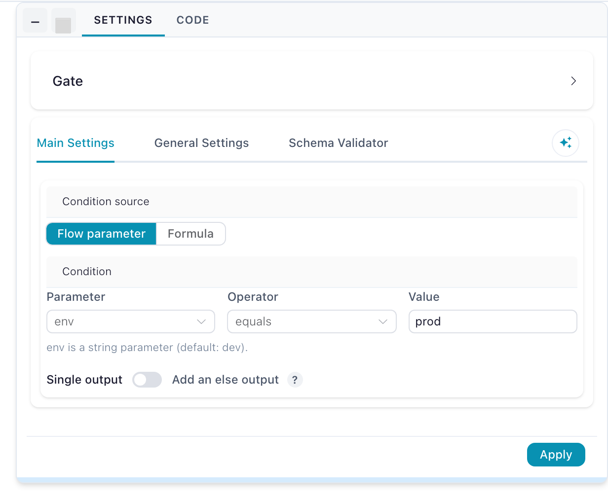
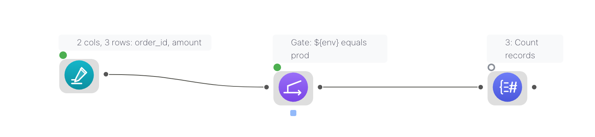

Combine Nodes
Combine nodes merge multiple datasets by matching values, stacking rows, finding similar records, generating all possible combinations, or grouping related elements in a network.
Some combine nodes are not in Flowfile Lite
The browser-only Flowfile Lite build supports Join, Cross Join, and Union Data. Fuzzy Match, Graph Solver, and Gate require the full desktop/server build.
Node Details
Join
The Join node merges two datasets based on matching values in selected columns.
Key Features
- Supports seven join types: inner, left, right, full, semi, anti, and cross
- Join on one or more columns
- Handles duplicate column names with automatic renaming
Usage
- Connect two input datasets (left and right).
- Select a join type (see the table below).
- Choose columns to join on (not needed for
cross). - Select which columns to keep from each dataset.
Configuration Options
| Parameter | Description |
|---|---|
| Join Type | inner, left, right, full, semi, anti, or cross. |
| Join Columns | Columns used to match records between datasets. Not required for a cross join. |
Join types:
| Type | Result |
|---|---|
inner |
Only rows with a match in both inputs. |
left |
Every left row; matched right columns, nulls where there is no match. |
right |
Every right row; matched left columns, nulls where there is no match. |
full |
Every row from both inputs, matched where possible. |
semi |
Left rows that have a match on the right — right columns are not added. |
anti |
Left rows that have no match on the right. |
cross |
Every combination of left and right rows (Cartesian product). |
full vs outer
The Join node's dropdown labels the full outer join full. The programmatic API also accepts outer as an alias for the same strategy. For a Cartesian product with no keys, the dedicated Cross Join node is usually clearer than the cross type here.
Fuzzy Match
The Fuzzy Match node joins datasets based on similar values instead of exact matches, using various matching algorithms.
Key Features
- Six string-similarity algorithms:
levenshtein,jaro,jaro_winkler,hamming,damerau_levenshtein, andindel - Configurable similarity threshold
- Calculates match scores
- Joins datasets based on approximate values
Usage
- Connect two datasets (left and right).
- Select columns to match on.
- Choose a fuzzy matching algorithm.
- Set a similarity threshold (0-100; defaults to
80).
Configuration Options
| Parameter | Description |
|---|---|
| Join Columns | Columns used for fuzzy matching. |
| Fuzzy Algorithm | One of levenshtein, jaro, jaro_winkler, hamming, damerau_levenshtein, or indel. |
| Threshold Score | Minimum similarity score for a match, on a scale of 0-100. Defaults to 80. |
Union Data
The Union Data node merges multiple datasets by stacking rows together.
Key Features
- Combines multiple datasets into one
- Automatically aligns columns based on names
- Uses diagonal relaxed mode, allowing flexible column matching
Usage
- Connect multiple input datasets.
- The node will automatically align and stack the data.
Union is also the re-convergence point for conditional branches: it runs as long as at least one of its inputs survived, so a branch that was gated off contributes nothing. A branch that failed still blocks it. See Gate.
Gate
The Gate node decides whether a branch runs at all. Its data input passes through unchanged while the gate's condition holds. When the condition does not hold, the gate itself still succeeds — but every node downstream of it is skipped, not failed. The run stays green, progress still reaches its total, and sources upstream of the gate still finish their post-run work (a Kafka Source commits its offsets as usual).
Where Filter decides which rows continue, Gate decides whether the rest of the branch executes.
Inputs
| Handle | Purpose |
|---|---|
| Data (passes through) | The dataset the gate forwards. Required, on the left edge. |
| Control (optional) | The small square pip at the bottom of the node — a signal, not data. Read only when the condition source is Formula; when connected, the formula is checked against this input instead of the data input. |
Outputs
| Handle | Purpose |
|---|---|
Then (T) |
The data, live while the condition holds. The only output unless the else output is enabled. |
Else (E, optional) |
Enable Add an else output in the settings: the data leaves here when the condition does not hold. Exactly one of the two sides runs per execution; the other side's downstream is skipped. |
Condition source: flow parameter
The default. Pick a flow parameter (defined in Flow settings), an operator, and — for the comparing operators — a value. The value you type is coerced using the parameter's declared type, so an integer parameter compares as a number, not as text.

| Operator | Gate opens when |
|---|---|
| equals | The parameter's value equals the value you typed. |
| not equals | It does not equal that value. |
| is one of | It appears in the comma-separated list you typed. |
| is not one of | It does not appear in that list. |
| is true | It reads as boolean true (true, 1, yes, on). |
| is false | It does not read as true. |
| is set | It is not empty. |
Parameter conditions are resolved before the run starts, so the execution plan already knows which branches are live. Overriding the parameter is what flips the gate — including on a headless run: flowfile run flow my_flow.yaml --param env=prod.
Condition source: formula
Write a flowfile formula — the same expression language as the Filter node's advanced mode. The gate applies it as a row predicate and opens when at least one row matches. An empty result closes the gate — no matching rows means don't run the branch. A formula that cannot run (a typo, an unknown column) fails the gate visibly rather than silently picking a branch, and ${param} references resolve inside the formula like in any other node — ${env} = 'prod' compares the parameter's value against the literal.
The formula is checked against the control input when one is connected, otherwise against the data input itself:
- Gate on the data: leave the control handle unconnected and write the condition over the data's own columns —
[status] = 'error'runs the branch only when error rows exist. - Gate on a signal: wire any node to the control handle and the formula reads that frame instead — a Group By producing
null_ratefeeding the control handle with formula[null_rate] < 0.05gates the write on a quality verdict computed elsewhere.
A formula gate re-evaluates on every run even when nothing else in the flow changed, because the data it checks can change without any setting changing.
The if/else pattern
Enable Add an else output and the gate becomes a two-exit router: one condition, two branches, complementarity guaranteed. Put each branch behind one exit and re-converge them on a Union:
graph LR
R[Read data] --> G["Gate: env equals prod"]
G -- "T (then)" --> P[Enrich for prod]
G -- "E (else)" --> D[Sample for dev]
P --> U[Union data]
D --> U
U --> W[Write data]Exactly one side runs, and the Union outputs whichever branch ran. A column produced only by the skipped branch is absent from the output — it does not come back as nulls. So when the two branches produce different shapes, configure the nodes downstream of the Union against the columns the branches share, or end each branch with a Select that establishes a common shape (keep the missing columns) before the Union. Note that edit-time schema prediction is gate-blind: the canvas predicts the union of both branches' columns, so a run's actual output can be narrower than the predicted schema.
(Two separate gates with hand-written complementary conditions still work — but the else output cannot drift out of complement, so prefer it.)
Skipped is not failed

A deliberately skipped node shows a hollow grey ring on the canvas ("Skipped (gated off) — condition not met") and appears as Skipped in the run report with no runtime. It is a successful outcome: the flow's overall status stays green and the completed-node count still reaches its total.
Skips caused by a failure or by invalid settings are unchanged — they still block everything downstream, including a Union that has other healthy inputs.
A closed gate does not stop the upstream
A gate only prevents its downstream from running. Everything between the source and the gate still executes, so an expensive read placed above a gate is paid for even when the branch is off. Put the gate as early in the branch as the condition allows.
Export to Python
Gates survive all three code export modes — Polars, FlowFrame, and Project: each gate becomes a real if block over the generated function's keyword arguments. An else-output gate exports as a genuine if/else pair, and the Union re-converging its two sides collapses to a conditional assignment — whichever side ran is the result. A Union behind independent gates instead appends each surviving branch to a list under its own if guard and concatenates the list — a gated-off branch simply isn't in it. A formula gate exports as a small row-probe helper evaluated when the pipeline function runs.
Single-node preview ignores gates entirely — fetching one node's data plans as if every gate were open, so you can inspect a branch that this run's condition would skip.
Cross Join
The Cross Join node creates all possible combinations between two datasets.
Key Features
- Generates a Cartesian product of two datasets
- Automatically aligns columns
- Handles duplicate column names
Usage
- Connect two datasets (left and right).
- Select the columns that you would like to keep and their output names
- The node will generate all possible row combinations.
Graph Solver
The Graph Solver node groups related records based on connections in a graph-structured dataset.
Key Features
- Identifies connected components in graph-like data
- Groups related nodes into the same category
- Supports custom output column names
Usage
- Select From and To columns to define relationships.
- The node assigns a group identifier to connected nodes.
Configuration Options
| Parameter | Description |
|---|---|
| From Column | Defines the starting point of each connection. |
| To Column | Defines the endpoint of each connection. |
| Output Column | Stores the assigned group identifier. |
Run Flow
The Run Flow node executes another, catalog-registered flow inside the current one — the calling side of a subflow. Its input and output handles are shaped by the child flow's Flow Input and Flow Output nodes, and its settings map values into the child's parameters, including running the child once per row of a driving table.
| Parameter | Description |
|---|---|
| Flow | The catalog-registered child flow to run |
| Parameter bindings | Default, constant, or column-mapped value per child parameter |
| Iteration mode | Run once with the first row's values, or once per row (capped at 1000) |
See Subflows for registration, wiring, and error handling.